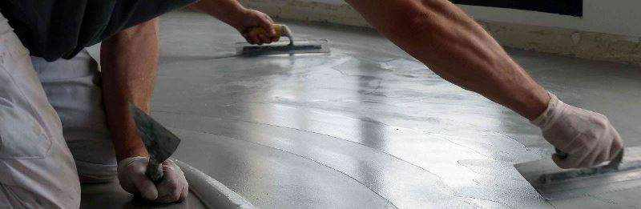

Topciment presenteert Efectto!
Topciment presenteert Efectto, de nieuwe lijn van continue en gebruiksklare coatings.
gebruik van hoge decoraties.

Efectto is een zeer uitgebreid assortiment producten met een grote verscheidenheid aan afwerkingen die zal in de komende maanden onthuld worden. De eerste van deze nieuwe producten die te zien zijn het licht is Efectto Quartz.
Efectto Quartz dankt zijn naam aan de minerale en natuurlijke afwerking die het karakteriseert. A Eenmaal aangebracht, maakt dit product het mogelijk om zeer aangename decoratieve afwerkingen te verkrijgen. zowel in zicht als in aanraking. De afwerking is vergelijkbaar met die van microcement, maar met een veel meer natuurlijke textuur en zonder watermerken.
Daarnaast is een van de grote voordelen van Efectto Quartz dat het klaar is voor gebruik. gebruik, zodat hun voorbereiding minder omslachtig en praktischer is. U hoeft alleen open de emmer en begin met werken.
Efectto Quartz en alle producten van de Efectto-familie zijn het resultaat van een moeizaam onderzoek van nieuwe materialen en productietechnieken, met als doel om om onze klanten een product van de hoogste kwaliteit aan te bieden.
Topciment biedt de professional in zijn gretigheid om te innoveren een uniek product aan, in de marge, in de marge van stereotypen en dat breekt met decoratieve conventies.
Topciment verandert zijn imago!
Van Topciment hebben we besloten om nog een stap verder te gaan als het gaat om
design en we hebben ons imago en de esthetiek van onze kubussen vernieuwd.
Wij
presenteren ons assortiment Sttandard producten, met dezelfde
kwaliteit en
eigenschappen, maar met een vernieuwde uitstraling die veel meer visueel en
actueel is, altijd zonder de essentie van Topciment te verliezen.

Met deze verbetering willen we een stap vooruit zetten op het gebied van design en het imago hebben dat ons merk echt vertegenwoordigt. TOP materiaal, TOP ontwerp.
Bovendien hebben we aan elk van de producten een specifieke kleur gekoppeld, zodat het veel gemakkelijker is om ze te identificeren en zo het werk te vergemakkelijken voor alle mensen die met onze materialen werken.
De onderscheidende TT van Topciment krijgt steeds meer aandacht in dit nieuwe ontwerp en is de centrale as van deze imagovernieuwing en productnaamgeving geweest. De tweecomponenten-microcementlijn verandert dus van naam. Het is een riskante stap, maar we gaan van een zeer generieke naam als bicomponent, naar een naam op maat van Topciment: Sttandard, altijd met onze TT die het merk versterkt.
Daarom worden vanaf nu onze tweecomponenten microkredieten genoemd:
- Sttandard Microbase 20KG
- Sttandard Microfino 20KG
- Sttandard Microstone 20KG
- Sttandard Microdeck 20KG
- Sttandard Aquaciment 20KG
Deze verandering is echter niet alleen esthetisch, maar ook de kwaliteit en ergonomie van de kubussen is doorgevoerd, omdat we ons niet alleen richten op het imago, maar ook op het bereiken van betere kwaliteit in alles rondom Topciment.
Met al deze verbeteringen wil Topciment zijn imago versterken en zich positioneren als het beste merk microcement op het gebied van materiaalkwaliteit en design. Altijd zonder de mensen te vergeten die met ons werken, want alles is voor hen.
Microcement
in keukens
De beste gerechten worden bereid in een omgeving die dient als een bron van inspiratie.
Elke kok heeft graag elementen om zich heen om zijn creativiteit te helpen. Microcement is net zo veelzijdig als mensen: er is een afwerking voor elke stijl. Of het nu gaat om een nieuwe keuken of een verbouwing, het eindresultaat is uniek. In het geval van een verbouwing, wordt het verwerkt over de bestaande ondergrond met een maximale dikte van 3 mm, waardoor een vernieuwing van muren en vloeren sneller en zonder bouwafval, stof of vuil kan worden verwezenlijkt.
Microcement is een neutraal materiaal dat met allerlei soorten keukens combineert, van tijdloos tot modern, van landelijk tot industrieel. De lichte kleuren brengen helderheid en vergroten de ruimte, terwijl donkere kleuren gezellige ruimtes creëren. In open keukens biedt microcement de mogelijkheid om dezelfde vloer te hebben als in de woonkamer waarmee continuïteit wordt verkregen. En als het tegenovergestelde beoogt wordt en men de ruimtes juist wil differentiëren kiest u juist tegenovergestelde kleuren. Na het kiezen van de finish van het microcement is de volgende stap het selecteren van de meubels die aansluiten bij de gebruikte kleuren en effecten. In dit geval kunnen ook de meubels worden verwerkt met microcement om een origineel en 100% exclusief ontwerp te hebben.
De keuken is een ruimte die we graag schoonhouden omdat we er met voedsel werken. De vloer en de muren worden voortdurend blootgesteld aan vetspetters en vloeistoffen. In dit aspect heeft microcement een groot voordeel: het onderhoud is zeer eenvoudig. Daar er geen voegen zijn is schoonmaken heel makkelijk. Met Topciment Ecoclean producten kunt u de vloeren en muren stralend houden. Hierdoor wordt ook het gebruik van agressieve producten zoals bleekmiddel of ammoniak voorkomen en dus geen last van onaangename dampen of gezondheidsproblemen.
Comfort en persoonlijkheid zijn te combineren voor een fantastische keuken. Één element gemeen: de coating van microcement.

Microcement
zonder problemen
Hoe problemen met microcement te voorkomen ? Een toepassing met Topciment garandeert producten van de beste kwaliteit, gecertificeerde verwerkers en deskundigen op het gebied van microcement
Een verbouwing met microcement uitgevoerd door ervaren professionals en met kwaliteitsproducten helpt problemen tijdens en na voltooiing te voorkomen. De eerste stap is het kiezen van een specialist die kennis heeft van de verschillende materialen en de beste kwaliteit kiest.
De diverse soorten microcement onderscheiden en aanbrengen op het oppervlak waarvoor ze zijn ontwikkeld is noodzakelijk voor een succesvolle verbouwing. Passend advies begint bij de analyse van de ondergrond en een beraming van de benodigde producten, tijd en kosten afgestemd op vierkante meters.
Als u microcement wilt plaatsen is het niet nodig om de oorspronkelijke ondergrond weg te halen maar deze moet wel goed voorbereid worden. Als er voegen op de vloer of muren zijn, moet deze gelijk gemaakt worden v.w.b. absorbering en hoogte verschil. Als de ondergrond eenmaal genivelleerd is moet er een primer aangebracht worden om hechting van het nieuwe materiaal en de homogene porositeit te garanderen. Het wordt aanbevolen om glasvezel gaas te gebruiken om scheuren te voorkomen.
De instructies voor het gebruik van microcement moeten strikt gevolgd worden voor een probleemloze verwerking. Een goede professional zal de verschillende producten correct mengen om de maximale prestaties van de producten (hardheid, waterdichtheid enz...) te verzekeren. Aan de andere kant, is het respecteren van droogtijden essentieel om vochtvlekken te voorkomen. Een perfecte verwerking volgens instructies genereert geen problemen.
Topciment garandeert producten van de beste kwaliteit, gecertificeerde verwerkers en deskundigen op het gebied van microcement. Een toepassing met Topciment geeft garantie van kwaliteitsproducten, gecertificeerd verwerkers en deskundigen op het gebied van microcement, technisch advies tijdens de verwerking en een efficiënt team voor de oplossing van twijfels. Contacteer ons als u meer informatie wenst.
Nieuwe producten voor reiniging en onderhoud van microcement
Topciment lanceert vier nieuwe producten speciaal geformuleerd voor de verzorging, het onderhoud en het schoonmaken van microcement. Ecoclean en Ecoclean PRO reinigers zijn eco-vriendelijk en het gebruik ervan is geschikt voor zowel huishoudelijk als professioneel gebruik.
Met de wassen voor onderhoud van vloeren, Ceraciment en Ceraciment PRO behouden we de hardheid en de natuurlijke glans van de vloer veel langer. De speciale formule, verrijkt de behandelde bodem, speciaal voor microcement.
In de sectie Professionals >> technische gegevens kunnen de datasheets worden gedownload in PDF van dit nieuwe gamma van producten voor de reiniging en verzorging van Topciment.
Contract van Topciment met CYPE weer een jaar verlengd
Topciment heeft het contract met CYPE opnieuw een jaar verlengd. Met deze overeenkomst kan Topciment, producent van microcementen, zijn diensten blijven verlenen aan de vakman in de bouw, bij het maken van diens bestekken en offertes.
De onderneming, gevestigd in Manises, profileert zich met deze overeenkomst als een bedrijf dat nauw betrokken is bij het werk van architecten en ingenieurs. Deze kunnen, met behulp van de prijsgenerator, bij hun bestekken gebruik maken van nauwkeurige en uitputtende omschrijvingen van elk bouwelement, waaronder dus ook microcement.
De prijsgenerator, toegankelijk via een platform met meer dan 2 miljoen gebruikers per jaar, is een effectieve software tool voor architecten en projectleiders, dat voorziet in prijzen en kostenramingen, en waarmee complete en hoogwaardige bestekken kunnen worden gemaakt. Tevens biedt het platform directe informatie over fabrikanten en producten.
Topciment heeft zijn producten toegevoegd aan de prijsgenerator, waardoor ze een plaats hebben gekregen in de meest prominente online showroom van de bouwwereld. Specialisten vinden nu informatie en beeldmateriaal over de producten van Topciment, die aansluit op de voor elke begrotingspost vereiste specificaties, zodat gemakkelijker kan worden beslist over de voor de verschillende bouwoplossingen te gebruiken materialen.
De prijsgenerator is een efficiënte ontwerp-tool, die nu, met de opname van de producten van Topciment, zo mogelijk nóg vollediger is geworden.